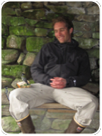
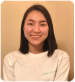
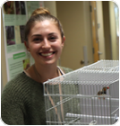
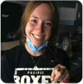

Chris Templeton
Associate Professor of Biology
contact: Department of Biology
Pacific University
2043 College Way
Forest Grove, OR 97116
phone: 503-352-3149
email: templeton AT pacificu DOT edu

Current Undergraduate Students

Lab Alumni: gone but not forgotten!
Carrie Nunnenkamp
Pacific, Biology 2022
May Murakami-Smith
Pacific, Biology 2022



Michelle Winfield
Pacific Biology 2023